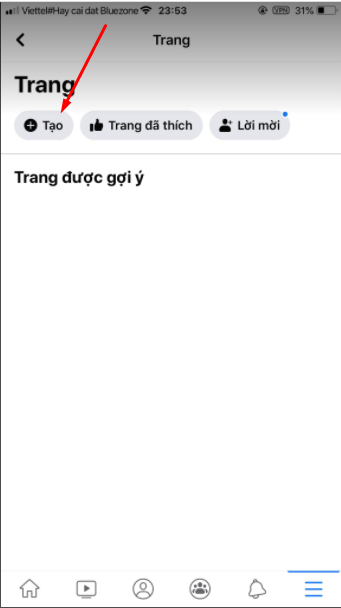

Hướng dẫn cách tạo Fanpage trên Facebook A->Z cực đơn giản

Ty Nguyen
CEO ❤️ AhaChat. Love babies & chatbot.Fanpage Facebook từ lâu đã không còn xa lạ với nhiều người, với một số người nó còn không thể thiếu. Fanpage là kênh có thể giúp các doanh nghiệp quảng bá sản phẩm, kinh doanh online hay đơn giản chỉ là nơi giúp mọi người cập nhật được các thông tin về mọi lĩnh vực trong cuộc sống, cùng bàn luận về các vấn đề đang nổi trội trên mạng xã hội. Bài viết dưới đây sẽ hướng dẫn cách tạo trang Fanpage trên Facebook để bán hàng từ A đến Z. Nếu bạn chưa biết cách tạo trang Fanpage trên Facebook thì đừng bỏ lỡ nhé!
I. Hướng dẫn tạo trang Fanpage Facebook
Với những người bắt đầu kinh doanh bán hàng online, ngoài việc đăng bán trên Facebook cá nhân thì Fanpage Facebook cũng chính là một kênh bán hàng khá hiệu quả. Và để đăng bán được hàng trên Fanpage, điều đầu tiên bạn phải lập được Fanpage thu hút được khách hàng tương tác.
Để tạo được trang Fanpage trên Facebook, bạn làm theo các bước hướng dẫn sau nhé.
1. Cách tạo Fanpage trên Facebook bằng máy tính
- Bước 1: Bạn phải đăng nhập vào tài khoản Facebook cá nhân của mình. Sau đó, bấm vào dấu + rồi chọn Trang
- Bước 2: Sau khi bấm chọn tạo trang, sẽ xuất hiện giao diện thiết lập một số thông tin cơ bản cho Fanpage của bạn.
Tại đây, bạn nhập đầy đủ các thông tin cơ bản cho Fanpage của bạn như sau:
- Đặt tên cho Fanpage của bạn
- Tiếp đến phần hạng mục, bạn chọn những hạng mục hay chủ đề mà Fanpage bạn muốn hướng tới. Với phần này bạn bạn chỉ có thể tạo từ 1 đến 3 hạng mục cho mỗi trang.
- Cuối cùng, thêm một vài dòng mô tả cho trang Fanpage của bạn
Sau khi đã thiết lập đầy đủ các thông tin cho trang Fanpage, bạn bấm vào nút “Tạo Trang”
- Bước 3: Sau khi đã bấm Tạo Trang, sẽ có thông báo bạn đã tạo trang thành công
Lúc này, bạn thêm ảnh đại diện và ảnh bìa cho Fanpage của bạn. Với hình ảnh, bạn thích hình nào thì chèn vào miễn sao bức hình liên quan đến chủ đề của Fanpage và tạo được ấn tượng cho khách hàng.
- Bước 4: Khi đã thiết lập hình ảnh đại diện và ảnh bìa cho Fanpage, sẽ được di duyển đến Fanpage mà bạn vừa tạo. Tại giao diện của Fanpage vừa tạo, bạn có thể thiết lập thêm các thông tin khác.
Đầu tiên, bạn nhấp vào tạo tên người dùng cho Fanpage. Việc tạo tên người dùng sẽ giúp người dùng dễ tìm kiếm Fanpage của bạn hơn.
Tiếp theo, bạn đặt tên người dùng vào khung như hình dưới và ấn nút “Tạo tên người dùng”
Như vậy là bạn đã tạo xong tên người dùng cho Fanpage của bạn. Khi tạo xong sẽ có thông báo thành công như hình dưới
- Bước 5: Ấn vào + Thêm nút để khách hàng hoặc đối tác liên hệ qua Fanpage của bạn nhanh hơn
Sau khi ấn vào + Thêm nút, sẽ có một list danh sách về hành động mà bạn muốn khách hàng truy cập Fanpage của bạn thực hiện. Tùy vào nhu cầu và mong muốn của bạn mà cho nút phù hợp.
Như vậy, về cơ bản là bạn đã tạo xong Fanpage trên Facebook rồi. Nếu muốn chỉnh sửa, thiết lập theo nhu cầu sử dụng trang của bạn thì có thể vào mục “Cài đặt trang”
2. Cách tạo Fanpage trên Facebook bằng điện thoại di động
Bên cạnh cách tạo Fanpage trên Facebook bằng máy tính, bạn cũng có thể tạo Fanpage trên Facebook bằng điện thoại di động. Cách tạo Fanpage trên điện thoại di động cũng khá đơn giản, bạn có thể làm theo các bước hướng dẫn sau:
- Bước 1: Bạn truy cập vào ứng dụng Facebook trên điện thoại, đăng nhập vào tài khoản Facebook cá nhân của bạn.
Tại giao diện trang chủ, bạn bấm chọn biểu tượng 3 gạch ngang ở góc phải phía dưới màn hình và chọn mục Trang
- Bước 2: Tiếp đến bạn bấm vào nút + Tạo để bắt đầu quá trình tiến hành tạo Fanpage trên Facebook.

- Bước 3: Sau khi nhấn tạo, giao diện giới thiệu về trang Facebook hiện lên, bạn nhấn “Bắt đầu”
Bước 4: Thiết lập một số thông tin cơ bản của Trang
Đầu tiên, chọn hạng mục hay chủ đề mà Fanpage của bạn muốn phản ánh. Chọn xong hạng mục bạn ấn Tiếp
- Tiếp theo, đặt tên cho Fanpage của bạn. Khi đặt tên xong bạn nhấn Tiếp
- Nếu bạn có trang web, hãy điền URL website vào đây để mọi người có thể ghé thăm website hoặc blog từ Fanpage vừa tạo. Nếu không có thì tích vào ô Tôi không có trang web nhé
Sau đó nhấn Tiếp
- Cập nhật ảnh đại diện và ảnh bìa cho Fanpage của bạn. Nếu bạn chưa có ảnh đại diện hay ảnh bìa phù hợp thì có thể bỏ qua, cập nhật sau.
Cuối cùng bạn ấn Xong, như vậy là cơ bản đã tạo xong Fanpage trên Facebook bằng điện thoại rồi nhé.
II. Làm thế nào để nhiều người biết đến trang Fanpage mới tạo
Sau khi đã tạo xong Fanpage trên Facebook, chắc hẳn ai cũng muốn nhiều người biết đến Fanpage mà mình mới tạo. Để có thể mời nhiều người biết đến Fanpage của bạn vừa tạo thì bạn làm theo hướng dẫn sau:
Bạn nhấn vào dấu 3 chấm ở giao diện trang chủ Fanpage của bạn, sau đó click chuột vào “Mời bạn bè”
Sau khi ấn mời bạn bè, sẽ xuất hiện giao diện danh sách bạn bè của bạn, bạn có thể mời tất cả bạn bè like fanpage của bạn. Ngoài ra, bạn có thể chia sẻ fanpage trên các hội nhóm để nhiều người biết hơn nhé.
Bài viết trên đây đã hướng dẫn các bạn cách tạo trang Fanpage trên Facebook một cách khá chi tiết trên máy tính lẫn thiết bị di động. Từ bây giờ bạn đã có thể tạo ngay cho mình một trang Fanpage thật ấn tượng để bắt đầu quảng bá sản phẩm tới hàng triệu người tiêu dùng. Nếu có bất kỳ thắc mắc hay câu hỏi vui lòng gửi ý kiến của bạn ở mục bình luận bên dưới, chúng tôi sẽ phản hồi trong thời gian sớm nhất. Chúc bạn thành công!